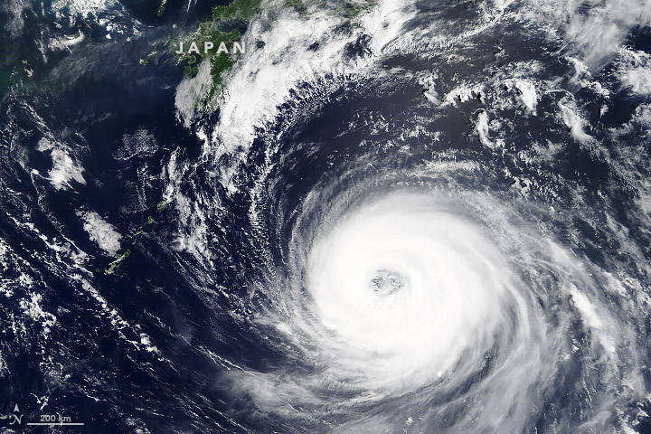

Track and Detect Typhoons
There is no sure way to predict when a typhoon will occur but scientists can track and measure how powerful
a typhoon can be.
How are Typhoons intensity detected?
So far, the most reliable way of measuring the intensity of a typhoon is flying straight into it and using
weather instruments that measure the pressure inside the storm (Barometer), how humid it is (Hyrgometer),
how hot it is (Thermometer), and which way the wind is blowing (Wind Vane) as well as wind speed (Anemometer).
They use these instruments to determine the category of the typhoon.
How are Typhoons tracked?
Satellites can be used to track where the storm is headed as well as people who fly into the storm to predict
where it will be heading next.
